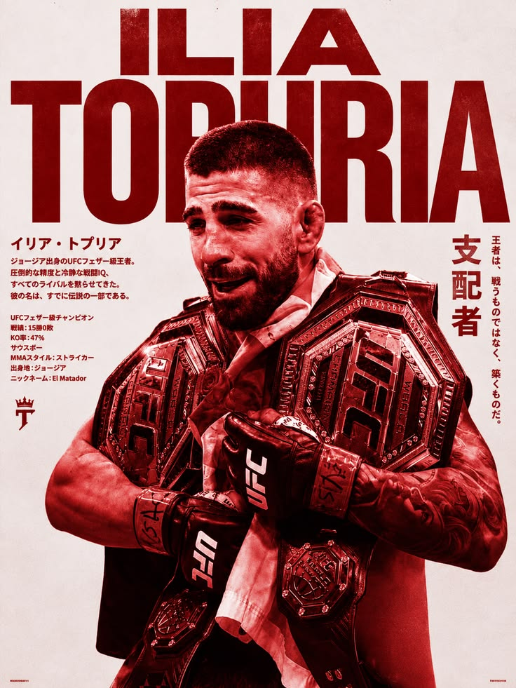
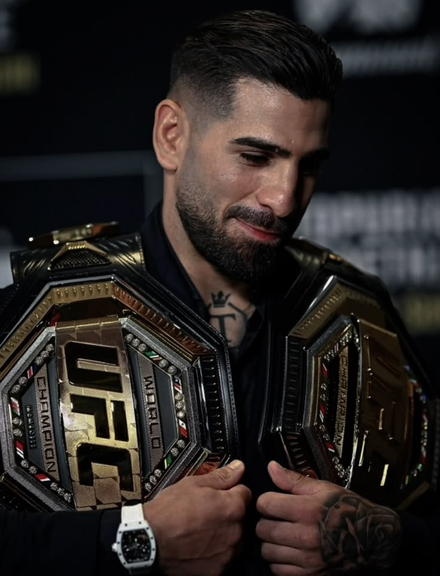

ილია თოფურია (დ. 21 იანვარი, 1997, ჰალე, გერმანია) — ქართველი შერეული საბრძოლო ხელოვნების (MMA) მებრძოლი. ასპარეზობს მსუბუქი წონითი დივიზიონის „აბსოლუტურ საბრძოლო ჩემპიონატში“ (Ultimate Fighting Championship, UFC). 2024 წლის 18 თებერვალს, ალექსანდრ ვოლკანოვსკის დამარცხების შემდეგ, ილია თოფურია გახდა UFC-ის ქვემსუბუქი წონითი დივიზიონის ჩემპიონი, ხოლო 2025 წლის 28 ივნისს, ჩარლზ ოლივეირას დამარცხების შემდეგ, UFC-ის მსუბუქი წონითი დივიზიონის ჩემპიონის წოდებაც მოიპოვა. ილია თოფურია პირველი მებრძოლია ისტორიაში, რომელმაც UFC-ის ორი წონითი დივიზიონის ჩემპიონის ქამარი ისე მოიპოვა, რომ ერთხელაც არ დამარცხებულა. 2025 წლის მონაცემებით, მამაკაცთა შორის UFC-ის pound-for-pound რეიტინგში მეორე ადგილზეა.შეიტყვე მეტი
Last 5 Fights Stats of Ilia
| მეტოქე | შედეგი | მეთოდი | რაუნდი | თარიღი |
|---|---|---|---|---|
| Josh Emmett | მოგება | ერთსულოვანი გადაწყვეტილება | 5 | 24.06.2023 |
| Alexander Volkanovski | მოგება | KO — დარტყმა | 2 | 17.02.2024 |
| Max Holloway | მოგება | KO — დარტყმები | 3 | 26.10.2024 |
| Charles Oliveira | მოგება | KO — დარტყმები | 1 | 28.06.2025 |
| Justin Gaethje | წაგება | TKO — კუთხის გაჩერება | 4 | 14.06.2026 |